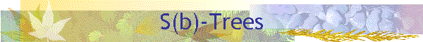

Home | PSI RAS | RCIS | S-Tree Lib

|
 Home | PSI RAS | RCIS | S-Tree Lib
|
To refine the phenomenon described above we need to define weight for each key from K. From the practical viewpoint the weight is the number of bytes the key is stored in. The weight is different to the length since sometimes additionally to the key itself it is necessary to store some extra information, like the key length or the ending zero byte. m(k) denotes the weight of the key k, and mmax(K) denotes the maximal weight of a key in the key set K. A S(b)-tree (read as sweep b tree) is characterized by the following three parameters:
The tree order q specifies the minimal number of keys in a none-root node of the tree. The root must contain at least one key. The tree rank p specifies the maximal total weight of keys in a node. We say that a tree node S is well formed if the number of keys |S| >= q (|S| >= 1 for the root), and if the total weight of the node M(S) <= p. To provide tight packing of keys a S(b)-tree must satisfy an incompressibility property. Let us consider b+1 adjacent nodes of the same level of the tree, and b delimiting keys, that separate the references to the adjacent nodes in the nodes’ parents. This collection of nodes, and their delimiting keys is called a sweep, and b is defined to be the length of the sweep. The sweep of length b is called compressible if one can construct a sweep of length b-1 containing all the keys of the initial sweep, and composed of b well-formed nodes, and b-1 delimiting keys. Otherwise, the sweep is called incompressible. Thus the tree is incompressible if any sweep of length b in it is incompressible. A S(b)-tree of order q, and rank p is a structured tree incompressible with respect to the locality parameter b. The following restrictions must hold to provide correctness of the algorithms for S(b)-trees.
|
|
Konstantin Shvachko: |